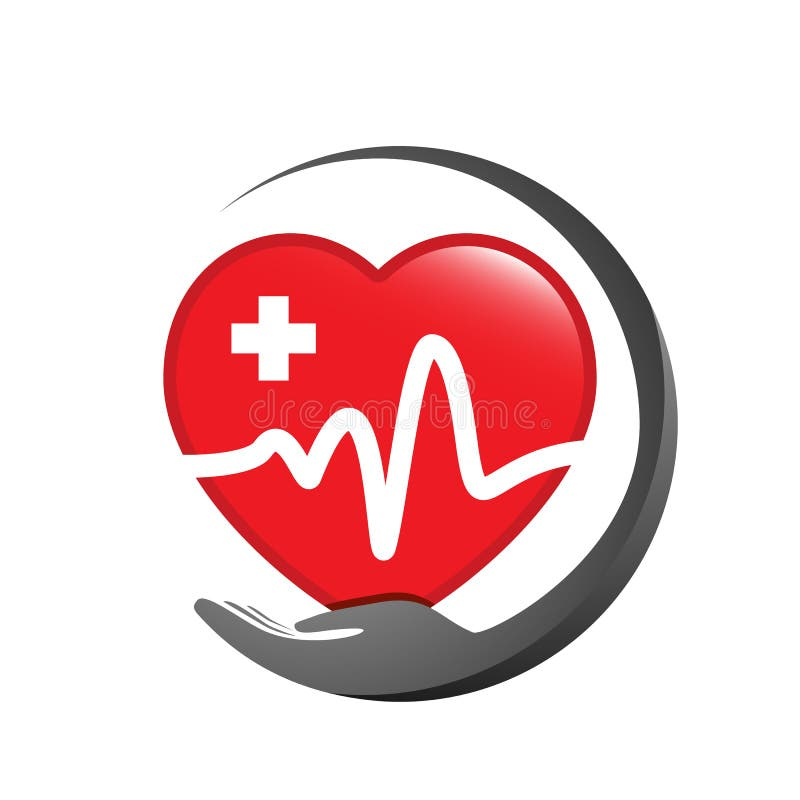

Your trusted digital health promotion resource. Discover practical health information, disease prevention strategies, sports science guidance and healthy lifestyle practices for individuals, families and communities.
Work Smart, Not Harder!
AfyaNexa is a digital health promotion initiative established by the HPS Tech Digital Innovation Team at Masinde Muliro University of Science and Technology (MMUST). Our mission is to empower people with practical, understandable and evidence-informed health information that supports disease prevention, healthy lifestyles and stronger communities.
Discover our major health promotion areas.
Health Promotion Areas
Central Health Mission
Health Promotion and Sports Science
Our Community Focus
Explore 20 important areas of health promotion, disease prevention and sports science.
Discover healthy habits, personal hygiene and everyday disease prevention.
Understand preventive services, screening and community healthcare.
Promote safe pregnancy, newborn care, breastfeeding and child health.
Understand vaccination, immunization schedules and vaccine safety.
Learn about malaria, HIV, tuberculosis and infection prevention.
Explore prevention of diabetes, cancer, hypertension and heart disease.
Learn about balanced diets, food safety and healthy Kenyan foods.
Discover clean water, sanitation, waste management and pollution prevention.
Promote emotional wellbeing, stress management and mental health awareness.
Understand reproductive health, family planning and STI prevention.
Promote healthy development, hygiene and wellbeing among young people.
Encourage community participation, health campaigns and household prevention.
Improve health literacy, awareness campaigns and responsible communication.
Understand disease patterns, surveillance and outbreak prevention.
Learn workplace safety, hazard prevention and healthy working environments.
Discover sports participation, injury prevention and athlete wellbeing.
Promote active living, fitness, strength and disease prevention.
Understand emergency response, CPR awareness and basic first aid.
Explore Kenya's healthcare structure, health rights and access to services.
Identify reliable health information and understand public health evidence.
Know what to do when an emergency happens.
Check that the environment is safe before approaching an injured person. Call for emergency assistance. In Kenya, 999 or 112 can be used to request emergency services where available.
Apply firm, continuous direct pressure to the wound using clean cloth or gauze. Seek urgent medical help. Do not remove deeply embedded objects.
Cool the burn under cool running water for 20 minutes. Remove jewellery and loose clothing near the burn, but do not pull away anything stuck to the skin. Cover loosely with a clean, non-fluffy dressing. Do not apply ice, toothpaste or butter.
If an adult or child over one year cannot speak, breathe or cough effectively, call for emergency help. Give up to five back blows, followed by up to five abdominal thrusts, alternating as appropriate. For infants, use five back blows and five chest thrusts. Do not use abdominal thrusts on infants. Seek trained emergency assistance.
Protect the person from nearby objects, cushion their head and time the seizure. Do not restrain them or put anything in their mouth. After the seizure, check their breathing. Seek emergency help if it lasts five minutes or longer, repeats, or the person has difficulty breathing or is injured.
Keep the injured area still and supported. Do not attempt to straighten the bone. Seek professional medical assessment.
If someone is unresponsive and not breathing normally, call emergency services, obtain an AED if available and start CPR according to dispatcher instructions and your level of training. Use an AED as soon as available and follow its voice instructions.
Heatstroke is a medical emergency. Warning signs include confusion, collapse and very high body temperature. Call emergency services immediately. Move the person to a cool place and begin rapid cooling using cool water and other safe cooling methods while awaiting assistance.
First aid information on AfyaNexa is educational. It does not replace practical first aid training, professional assessment or emergency medical care. Do not delay emergency assistance.
Simple habits that help protect your health.
Drink adequate safe water throughout the day.
Include vegetables, fruits, proteins and whole grains.
Participate in regular physical activity and reduce prolonged sitting.
Wash your hands with soap and water at important times.
Maintain healthy sleep routines and allow your body to recover.
Manage stress, seek support and maintain positive relationships.
Promoting prevention through community awareness.
Promote mosquito nets, environmental cleanliness and early testing for suspected malaria.
Encourage appropriate vaccination and access to recommended immunization services.
Encourage physical activity, healthy eating and blood pressure screening.
Encourage proper sanitation, waste disposal and safe drinking water.
Our identity, vision and mission.
AfyaNexa is a digital health promotion and disease prevention initiative developed by HPS Tech Digital Innovation Team at Masinde Muliro University of Science and Technology.
To become a trusted digital health promotion resource that empowers individuals, families and communities to achieve healthier lives.
To provide accessible, practical and evidence-informed health information that promotes disease prevention, healthy lifestyles, physical activity and informed health decisions.
Work Smart, Not Harder!
HPS Tech Digital Innovation Team
Masinde Muliro University of Science and Technology
Team Coordinator
Development Team
Development Team
Development Team
Development Team
HPS Tech – Building Digital Solutions for Healthier Communities.
Personal contact details should only be published after the respective team members have given consent.
Connect with our health promotion initiative.
Masinde Muliro University of Science and Technology (MMUST)
Project: AfyaNexa
Focus: Health Promotion, Disease Prevention, Public Health and Sports Science.
Motto: Work Smart, Not Harder!
AfyaNexa provides general health promotion and educational information. It does not replace professional medical advice, diagnosis or treatment. Always consult qualified healthcare professionals for personal medical concerns. For emergencies, seek immediate medical assistance.
Clinical recommendations, vaccination schedules and emergency procedures should be checked against current guidance from the Kenya Ministry of Health, WHO, UNICEF and other recognised health authorities before publication.